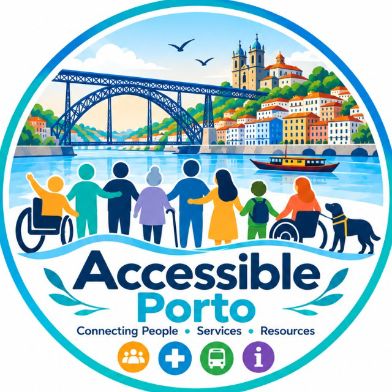

Who should it serve first?
Which areas of Porto District should we prioritise? Residents, visitors, carers, or all three? Which everyday needs are hardest to find help for?
A proposed directory for finding everyday support and checking access details. Disabled people and the Porto community would help shape it.
Explore the example directoryA first idea for discussion · No account needed

Find what works for you
Try a search or combine filters to see how the directory could work.
Selected features must all be marked “Yes” in the sample data. Unknown details are excluded.
Let’s shape this together
This is a working concept, with a provisional name and fictional content.
Which areas of Porto District should we prioritise? Residents, visitors, carers, or all three? Which everyday needs are hardest to find help for?
Agree the categories and access details with disabled participants. Include mobility, sensory, hearing, vision, and communication needs. Plan Portuguese and English content.
Choose volunteer editors, agree how claims are checked, and decide how people can report corrections. Start with 20–30 carefully checked listings.
Volunteers maintain approved listings in Google Sheets. A publishing step refreshes the searchable website. Suggestions arrive privately for review before appearing in the directory.
The workbook and listing CSV reflect the fictional examples shown above. The workbook also includes categories, parishes, draft reviews, and an editing guide. Spreadsheet edits do not update this demo automatically.
Not connected in this demo: Google Sheets, submissions, real service contacts, or translation. Search, filters, listing details, and printing work offline.